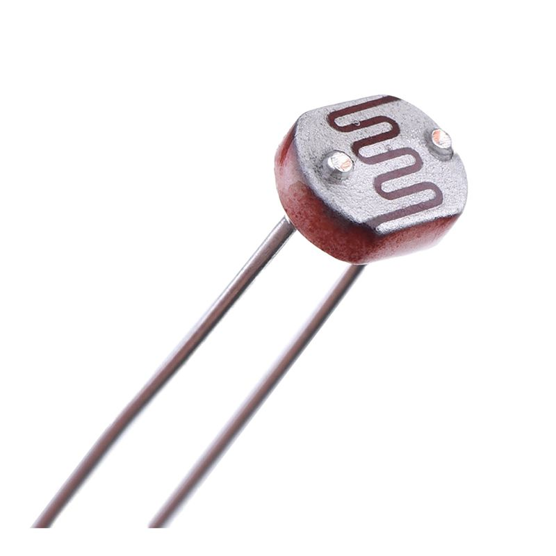
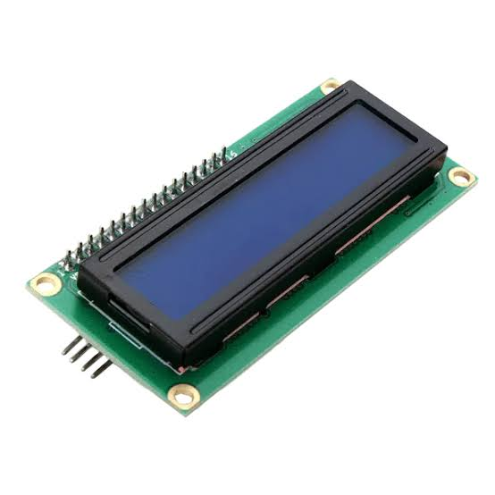
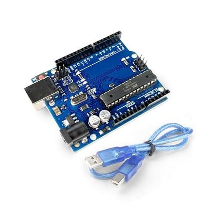
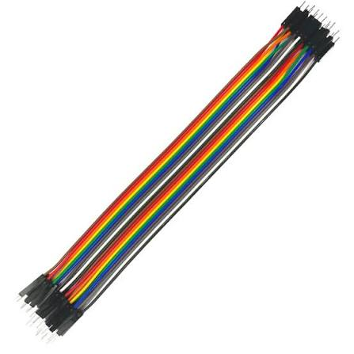
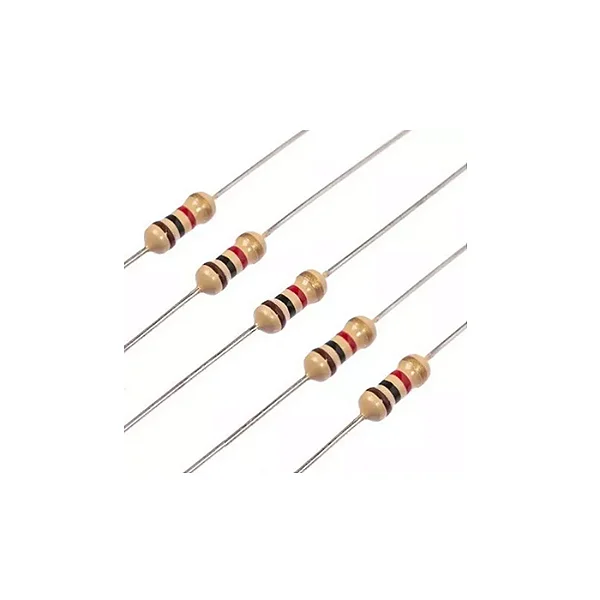
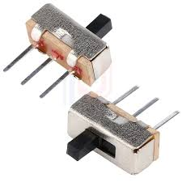

PROJETO INTEGRADOR
PROJETO INTEGRADORMateriais do projeto
- LDR (Light Dependent Resistor)
- LCD 16×2
- Arduino UNO
- Jumpers
- Resistores (100K 1K)
- Interruptor Deslizante Ss12d10 Alavanca

O LDR é um componente eletrônico cuja resistência elétrica varia conforme a intensidade da luz que incide sobre sua superfície. Ele é produzido por um material semicondutor, quando iluminado, ocorre um deslocamento de elétrons que altera sua resistência de forma proporcional à luz recebida.

O LCD é um dispositivo eletrônico alfanumérico que controla a passagem de luz para exibir informações visuais. Ele possui capacidade para apresentar até 32 caracteres simultaneamente, distribuídos em 2 linhas de 16 colunas. O componente funciona por meio de um controlador integrado que recebe as instruções do microcontrolador.

O Arduino UNO R3 é uma placa de desenvolvimento equipada com o microcontrolador ATmega328P, contando com 14 pinos digitais de entrada e saída, 6 portas analógicas, entrada USB, barramento ICSP e um botão de reinicialização.

Os jumpers são pequenos condutores elétricos usados na eletrônica para fazer rápidas conexões entre pontos de um circuito.

Os resistores são componentes passivos utilizados para limitar a corrente e dividir a tensão elétrica no circuito. Associados ao sensor LDR, formam um divisor de tensão de dupla escala que otimiza a sensibilidade da leitura analógica no Arduino UNO R3 em diferentes condições de luminosidade.

O interruptor deslizante é um componente eletromecânico utilizado para controlar o fluxo de eletricidade em circuitos elétricos e eletrônicos.
Conversão do sinal analógico para intensidade luminosa (lux)
A conversão da leitura analógica fornecida pelo Arduino para a intensidade luminosa é realizada em duas etapas, fundamentadas em conceitos de eletricidade e nas características físicas do sensor LDR. Inicialmente, determina-se a resistência elétrica do sensor a partir da tensão medida no circuito. Em seguida, utiliza-se essa resistência para estimar a intensidade luminosa em lux.
Determinação da resistência elétrica
A primeira etapa é fundamentada no conceito de divisor de tensão, que utiliza os princípios da Lei de Ohm e das leis dos circuitos elétricos. Em um circuito formado por duas resistências conectadas em série, a tensão de alimentação é distribuída proporcionalmente aos valores das resistências.
Considerando a tensão medida no ponto intermediário do circuito, é possível estabelecer uma relação matemática entre essa tensão, a resistência fixa e a resistência variável do LDR.
O conversor analógico-digital (ADC) do Arduino UNO R3 transforma a tensão recebida na entrada analógica em um valor numérico entre 0 e 1023, considerando sua resolução de 10 bits e uma referência de tensão de 5 V. Dessa forma, a leitura digital permite determinar a tensão presente no ponto intermediário do divisor.
Considerando a configuração em que o LDR está conectado ao GND e o resistor fixo está conectado ao 5 V, a resistência do sensor pode ser calculada pela seguinte expressão:
R_LDR = Rfixo × ADC / (1023 − ADC)
Onde: - R_LDR: resistência elétrica do LDR, em ohms (Ω). - Rfixo: resistência fixa selecionada no circuito, em ohms (Ω). - ADC: valor digital fornecido pelo Arduino, entre 0 e 1023.
Essa equação permite determinar a resistência aproximada do LDR a partir da leitura analógica. É importante ressaltar que sua aplicação depende da posição dos componentes no divisor de tensão. Caso o LDR e o resistor fixo estejam invertidos, a expressão matemática também deverá ser adaptada.
Determinação da intensidade luminosa
A segunda etapa é fundamentada nas características físicas dos materiais fotocondutores utilizados na fabricação dos LDRs. Esses materiais apresentam variações em sua resistência elétrica conforme a quantidade de luz incidente. De maneira geral, quanto maior a iluminação recebida pelo sensor, menor será sua resistência elétrica.
Essa relação não é linear. Por esse motivo, utiliza-se uma função de potência, modelo matemático empregado para representar o comportamento dos sensores fotossensíveis.
O datasheet da família GL55, que inclui o modelo GL5528, apresenta a resistência do sensor para uma iluminação de 10 lux na faixa de 10 kΩ a 20 kΩ. Para a construção do modelo matemático, foi adotado o valor médio dessa faixa, resultando em:
R10 = 15.000 Ω
O modelo matemático também utiliza o coeficiente γ (gama), responsável por representar a resposta do sensor à variação da iluminação. Esse coeficiente está relacionado à maneira como a resistência elétrica diminui conforme a intensidade luminosa aumenta.
Como não foi realizada uma caracterização experimental específica do sensor utilizado, foi adotado o valor γ = 0,7 como estimativa para o modelo matemático.
Com base nesses parâmetros, foi estabelecida a seguinte expressão para estimar a intensidade luminosa: L = 10 × (R10 / R)^(1/γ) Onde: - L: intensidade luminosa estimada, em lux (lx). - R10: resistência de referência do LDR a 10 lux, adotada como 15.000 Ω. - R: resistência elétrica do LDR calculada na primeira etapa, em ohms (Ω). - γ: coeficiente de resposta do LDR, adotado como 0,7 para esta estimativa.
Substituindo os valores adotados, obtém-se: L = 10 × (15.000 / R)^(1/0,7)
A utilização dessa expressão permite transformar a resistência elétrica calculada em uma estimativa da iluminância incidente sobre o sensor. Entretanto, como os parâmetros utilizados são aproximados, os resultados podem apresentar diferenças em relação aos valores reais de iluminação.
Integração das duas conversões
As duas expressões trabalham de maneira sequencial. Inicialmente, a leitura digital fornecida pelo Arduino é convertida em resistência elétrica por meio dos princípios do divisor de tensão. Posteriormente, a resistência calculada é aplicada ao modelo matemático de resposta fotossensível do LDR, permitindo estimar a intensidade luminosa do ambiente.
É importante destacar que o valor de R10 foi definido a partir da média da faixa apresentada no datasheet, enquanto γ foi adotado como uma estimativa, não sendo um valor confirmado especificamente para o sensor utilizado.
Dessa forma, os resultados representam aproximações e podem variar conforme as características individuais do componente, a temperatura e as condições de utilização. Para melhorar a precisão do sistema, seria necessário realizar uma calibração experimental utilizando um luxímetro como referência, permitindo ajustar os parâmetros matemáticos de acordo com o comportamento real do sensor.
Programação e funcionamento do Arduino
Para o desenvolvimento do projeto, foi utilizado o microcontrolador Arduino UNO R3, programado por meio da linguagem C++, com o objetivo de receber os sinais elétricos provenientes do circuito com o LDR, processar as variações de tensão e transmitir os resultados para o display LCD 16x2.
A programação foi desenvolvida para que o Arduino realizasse continuamente a leitura dos sinais analógicos, identificasse qual resistência fixa estava sendo utilizada, calculasse a resistência do LDR e, posteriormente, convertesse esse resultado em valores aproximados de lux.
Bibliotecas utilizadas
Para facilitar a programação e permitir a comunicação entre o Arduino e os componentes eletrônicos, foram utilizadas três bibliotecas:
- Wire.h: permite estabelecer a comunicação I2C entre o Arduino e outros dispositivos eletrônicos, utilizando os pinos SDA e SCL. - LiquidCrystal_I2C.h: disponibiliza funções para controlar o display LCD por meio da comunicação I2C, permitindo inicializar a tela, controlar sua iluminação e apresentar informações. - math.h: disponibiliza funções matemáticas utilizadas na programação. Neste projeto, destaca-se a função `pow()`, responsável por realizar operações de potenciação.
A comunicação I2C utilizada pelo display reduz a quantidade de conexões necessárias, pois utiliza apenas duas linhas de comunicação: SDA, responsável pelos dados, e SCL, responsável pelo sinal de sincronização. No Arduino UNO R3, essas conexões correspondem aos pinos A4 (SDA) e A5 (SCL), que também possuem identificação própria na placa.
Definição dos pinos e parâmetros matemáticos
Após a inclusão das bibliotecas, foram estabelecidas as entradas utilizadas para conectar os componentes ao Arduino:
```cpp const int pinoLDR = A0; const int pino1k = A1; const int pino100k = A2; ```
Cada variável representa uma entrada analógica do Arduino: -pinoLDR (A0): responsável por receber o sinal analógico proveniente do divisor de tensão. - pino1k (A1): utilizado para identificar a seleção do resistor de 1 kΩ. - pino100k (A2): utilizado para identificar a seleção do resistor de 100 kΩ.
A palavra-chave `const` indica que esses valores são constantes, ou seja, não são alterados durante a execução do programa. Já o tipo `int` permite armazenar números inteiros, como os números que identificam os pinos utilizados.
Em seguida, foram definidos os parâmetros matemáticos utilizados na conversão da resistência elétrica para lux: ```cpp const float R10 = 15000.0; const float GAMMA = 0.7; ```
O parâmetro `R10` representa a resistência de referência de 15.000 Ω, enquanto `GAMMA` corresponde ao coeficiente de resposta do LDR, adotado como 0,7.
A utilização do tipo `float` permite trabalhar com números decimais, necessários para a realização dos cálculos matemáticos.
Função setup()
A função `setup()` é executada apenas uma vez, sempre que o Arduino é ligado ou reiniciado. Sua principal finalidade é realizar as configurações iniciais dos componentes e preparar o sistema para o funcionamento.
Nesse projeto, essa função é utilizada para inicializar o display LCD e ativar sua iluminação de fundo: ```cpp lcd.init(); lcd.backlight(); ```
O comando `lcd.init()` inicializa o display e configura sua comunicação, enquanto `lcd.backlight()` ativa a iluminação de fundo da tela, permitindo a visualização das informações.
Também são configurados os pinos utilizados pelo circuito, definindo quais serão responsáveis pela leitura dos sinais e pela identificação do resistor selecionado.
Função loop() e processamento dos dados
Diferentemente da função `setup()`, a função `loop()` é executada repetidamente enquanto o Arduino estiver ligado. É nela que ocorre o processamento principal das informações coletadas pelo sensor.
Primeiramente, o programa realiza a leitura das entradas analógicas e identifica qual resistência fixa está selecionada no circuito, determinando se está sendo utilizado o resistor de 1 kΩ ou o de 100 kΩ. Essa identificação permite selecionar o valor correto de resistência para os cálculos seguintes.
Após essa identificação, o Arduino obtém a leitura do LDR por meio da entrada A0. Esse valor representa a tensão convertida digitalmente pelo conversor analógico-digital, variando de 0 a 1023.
Com a leitura obtida e a resistência fixa identificada, o programa realiza a conversão para resistência elétrica e, posteriormente, para intensidade luminosa.
O trecho responsável por esses cálculos é apresentado a seguir: ```cpp float resistencia = 0; float lux = 0;
if (Rfixo > 0 && leitura > 0 && leitura < 1023) { resistencia=Rfixo * ((float)leitura / (1023.0 - leitura)); lux=10.0 * pow(R10 / resistencia, 1.0 / GAMMA); } ```
Inicialmente, são criadas duas variáveis: `resistencia`, que armazenará a resistência calculada do LDR, e `lux`, que armazenará a intensidade luminosa estimada.
Em seguida, a estrutura condicional `if` verifica se a resistência fixa foi identificada corretamente e se a leitura analógica está dentro de uma faixa válida para os cálculos, evitando divisões por zero e resultados matematicamente indefinidos.
Caso as condições sejam atendidas, o programa executa duas operações.
Primeira operação: cálculo da resistência elétrica. ```cpp resistencia=Rfixo * ((float)leitura / (1023.0 - leitura)); ``` Essa expressão corresponde à fórmula do divisor de tensão apresentada anteriormente, permitindo determinar a resistência elétrica do LDR a partir da leitura analógica e do resistor fixo utilizado.
O comando `(float)` realiza a conversão do valor da leitura para um tipo numérico decimal, evitando que a operação seja limitada à divisão entre números inteiros.
Segunda operação: conversão para lux. ```cpp lux=10.0 * pow(R10 / resistencia, 1.0 / GAMMA); ``` Nessa etapa, a resistência calculada é substituída na fórmula de conversão para intensidade luminosa.
A função `pow()` realiza a potenciação, elevando a razão entre a resistência de referência e a resistência medida ao expoente 1/GAMMA.
Dessa maneira, o resultado obtido representa uma estimativa da intensidade luminosa incidente sobre o sensor, expressa em lux.
Exibição dos resultados no display LCD
Após a realização dos cálculos, o Arduino utiliza os valores obtidos para atualizar as informações apresentadas no display LCD 16x2.
A tela permite visualizar os resultados da medição, incluindo a intensidade luminosa estimada e as informações relacionadas ao resistor selecionado. Dessa forma, o usuário consegue acompanhar as variações de luminosidade em tempo real, sem a necessidade de utilizar um computador.
Ao final do ciclo de processamento, é utilizado o comando: ```cpp delay(500); ```
Esse comando determina uma pausa de 500 milissegundos, equivalente a meio segundo, antes de iniciar uma nova repetição da função `loop()`. Assim, o sistema realiza uma atualização aproximadamente a cada meio segundo, desconsiderando o pequeno tempo adicional necessário para executar as demais operações.
Considerações sobre o funcionamento
A programação desenvolvida permite integrar os conhecimentos de eletricidade e programação, transformando uma variação física de luminosidade em informações numéricas que podem ser interpretadas e apresentadas pelo sistema.
O processo começa com a variação da resistência elétrica do LDR, que modifica a tensão no divisor de tensão. Essa alteração é identificada pelo conversor analógico-digital do Arduino, que fornece uma leitura numérica utilizada nos cálculos matemáticos.
Posteriormente, a resistência elétrica é determinada e convertida em uma estimativa de intensidade luminosa, que é apresentada no display LCD.
Dessa forma, o Arduino UNO R3 atua como o elemento central do sistema, sendo responsável pela aquisição, pelo processamento e pela apresentação dos dados coletados pelo sensor.
Os valores apresentados devem ser interpretados como estimativas de iluminância, uma vez que os parâmetros utilizados na conversão não foram determinados por uma calibração individual do sensor. Apesar dessa limitação, o sistema permite demonstrar, de maneira prática, a aplicação dos conceitos de divisor de tensão, conversão analógico-digital, programação e processamento de sinais.